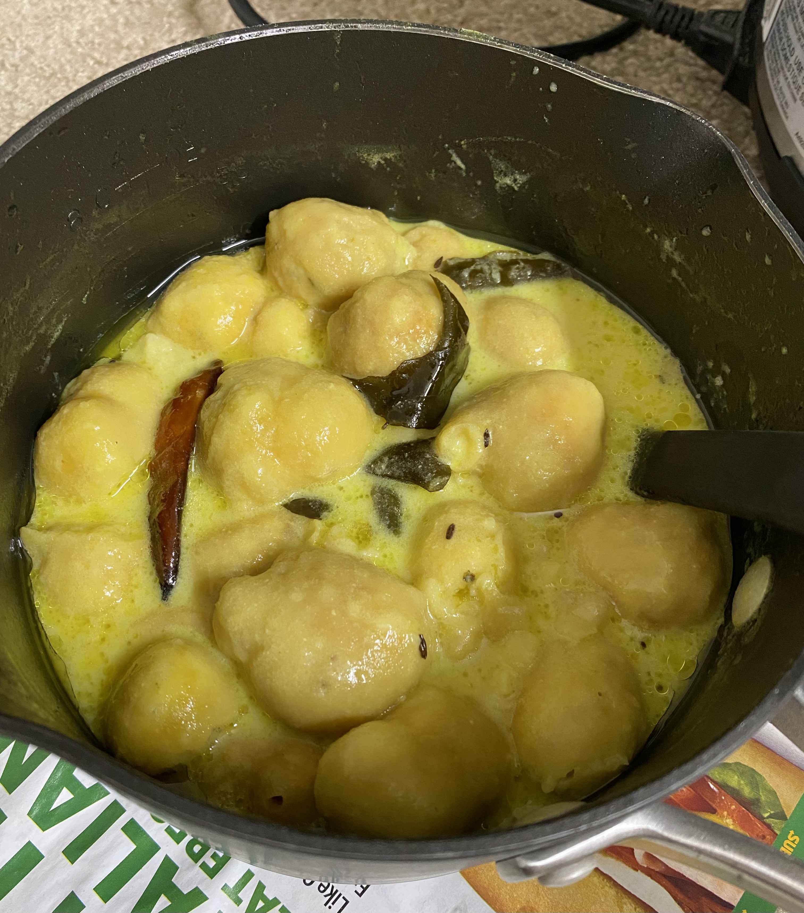

Misal pav is a popular dish from the Indian state of Maharashtra. The moth curry or usal form is
prepared using onion, ginger, garlic and other spices. The final dish is topped with farsan or sev,
onions, lemon and coriander. It is usually served hot with bread
KAAJU PANEER
Kaaju paneer made with cashews and paneer cubes. it is an ideal creamy gravy recipe which is majorly
shared and served with garlic naan, roti and chapathi.it is made with tomato and onion sauce with
cooking cream for extra creaminess.
EGG BIRYAANI
Egg Biryani is made by cooking together fragrant long grain basmati rice, spiced hard-boiled eggs,
perfectly caramelized onions, and select aromatic spices, delighting your senses in every bite.
FISH CURRY
This fish curry is made much the same traditional way by sautéing onions, ginger garlic, tomatoes &
ground spices.later this onion tomato masala simmered to cook down the ingredients and bring out the
flavors.
SPINACH PARATHA
Spinach paratha is made with spinach and Indian spices,the dough is made from whole wheat flour.
PALAK PANEER PARATHA
These Stuffed Palak Paneer Paratha Recipe is super simple and wholesome to make. It is packed with
proteins from the palak and paneer and flavours with subtle spices and herbs making it delicious.
MOONGDAAL APPE
To make moong daal appe soak moong daal in water,then drain and blend it to smooth paste,add all
ingredients and make a batter of dropping consistency,pour little batter in each mould and cook till
they turn golden brown.
KOFTA CURRY
Kofta curry is most common and healthy curry recipe. Generally most people use fresh vegetables and
green leaves vegetables for kofta curry.koftas consist of balls or a mixture – mixed with spices and
sometimes other ingredients.
KHEEMA
Masala kheema is a flavorful combination of onion, garlic, ginger, spices, meat, and tomatoes, making a
comforting dish that is easily accessible since garam masala is the only truly Indian ingredient.
CHHOLE BHATURE
Chole Bhature is a spicy chickpea curry that is served with leavened fried bread. Chole refers to the
curry and Bhatura is the crispy and soft and fluffy fried leavened bread.
CHIKEN DUM BIRYAANI
Biryani is a mixed rice dish originating among the Muslims of the Indian subcontinent. It is made with
Indian spices, rice, and usually some type of meat (chicken, goat, lamb, prawn, and fish),
PAAV BHAJI
Pav bhaji is a spiced mixture of mashed vegetables in a thick gravy served with bread. Vegetables in the
curry may commonly include potatoes, onions, carrots, chillies, peas, bell peppers and tomatoes.
MUSHROOM MASALA
Mushroom Masala is a delicious Indian curry made with mushrooms, onions, tomatoes, spices & herbs.
MEDU VADA
The medu vada is made from black lentils batter.soaked in water for several hours, and then ground to a
paste.The paste is flavoured with other ingredients such as asafoetida, methi seeds, ginger, cumin
seeds, black pepper, curry leaves, chillies and coconut pieces.It is then patted into doughnut-shapes
and fried in oil until golden brown.
BAAJRI BHAKAR AND BHAJJI
Baajri Bhakri Recipe: A traditional Maharashtrian dish, The curry uses chili peppers, cardamom, cumin,
coriander and other spices. It has a distinctive taste.
CHIKEN PURI
Chicken curry consists of chicken stewed in an onion- and tomato-based sauce, flavoured with ginger,
garlic, tomato puree, chilli peppers and a variety of spices, often including turmeric, cumin,
coriander, cinnamon, and cardamom.
SHEPU DHOKLI
Shepu dhokli recipe is loaded with greens like spinach, methi and dill and used chola dal. This is a
healthy breakfast dhokla to have. and made by kneading a dough of wheat flour, salt, and water, rolling
it, and cutting into pieces.
SHABU VADA
Sabudana Vada's are crispy and crunchy sago fritters made with soaked sabudana (sago), boiled potatoes,
coarsely ground peanuts, and a few and a few other ingredients and are a popular snack recipe for
fasting days. Serve them hot with green chutney or tomato ketchup.
PAALAK BHAJJI
The curry uses chili peppers, cardamom, cumin, coriander and other spices. It has a distinctive taste.
The Southern cuisines use ingredients like dried fish which are local to the area.
DUM BIRYAANI
Biryani is a mixed rice dish originating among the Muslims of the Indian subcontinent. It is made with
Indian spices, rice, and usually some type of meat (chicken, beef, goat, lamb, prawn, and fish).
GARLIC PARATHA
Garlic Paratha is a delicious flatbread recipe , this is very easy to make. Prepared with a handful of
ingredients such as all purpose flour, garlic cloves, coriander leaves, and ghee.
GOLI IDLI
It is an easy and less-oil breakfast recipe made with tiny pebbles of rice flour balls. these rice balls
are steamed till it becomes soft. it is healthy and prepared with minimal ingredients. It is generally
served with a choice of spicy red chutney or coconut chutney.
HAKKA NOODLES
Hakka noodles made with noodles of choice,some basic vegetable,a hint of black pepper and your favorite
sauce.
OATS DOSA
Instant Oats Dosa is simply made by mixing together ground rolled oats, rice flour, semolina, spices
and herbs with water to make a runny batter.
CHICKEN CURRY
Chicken curry consists of chicken stewed in an onion- and tomato-based sauce, flavoured with ginger,
garlic, tomato puree, chilli peppers and a variety of spices, often including turmeric, cumin,
coriander, cinnamon, and cardamom.
DAAL DHOKLI
Daal dhokli made with toor daal. The daal is then pressure-cooked with water and tempered with spices to
create a stew. The dhokli, or wheat flour pieces, are made by kneading a dough of wheat flour, salt, and
water, rolling it, and cutting into pieces.
DAHI BHINDI
Dahi bhindi is a delicious and flavorful dish of sauteed tender cooked okra in a smooth, creamy, lightly
spiced and tangy yogurt sauce.
DOSA
A dosa is made from a fermented batter of ground black lentils and rice. Dosas are popular in South Asia
as well as around the world. Dosas are served hot, often with chutney and sambar.
PAALAK PANEER
Palak paneer is prepared by first boiling and pureeing spinach. The puree is then mixed with sautéed
tomatoes and onions. Grilled cubes of paneer are then added to the puree. Palak paneer is typically
spiced with ginger, garlic, tomatoes, garam masala, turmeric, chili powder and cumin.
IDLI
Idli is a soft & fluffy steamed cake made with fermented rice & lentil batter. These are one of the
healthiest protein packed Breakfasts served with chutney and saambar.
POHA PARATHA
Mix veg poha paratha is a very easy, simple and healthy recipe. We are using lot many mix veggies in
this recipe. This is the best way to finish off left over veggies in your freeze. This can be a good
alternative to kande pohe. It turns out nice and crispy.
QUINOA FRIED RICE
Quinoa fried rice is made just like traditional fried rice with eggs, veggies, and a soy sauce.
SOYA CHUNKS DRY MASALA
This bold Indian soya chunks dry masala features meaty soya chunks cooked in a rich Indian sauce.The
curry is prepared using onion, ginger, garlic and other spices.
YOGURT CURRY WITH BHAJJI
Takachi Kadhi is a light and refreshing curry or soup. It is made using yogurt as the main ingredient
along with besan (Gram flour). Light on the tummy and a perfect during summers.

SPROUTS PARATHA
Moong Sprout Paratha or Spouted Moong dal Paratha is simple paratha of whole wheat flour with the
filling of sprouted moongdal,and some spices.
AAMARAS AND DHIRADI
Besan Chilla are savory Indian pancakes made with gram flour,spices,vegetables and herbs.They are
gluten-free & healthy!
RAGI MUDDE
Ragi Mudde, Ragi Sangati or Ragi Ball is a staple from Karnataka and Rayalaseema Region of Andhra Pradesh. It is basically a softball made using ragi flour or Finger millet flour and it can be served with spicy non-veg curries, sambar, or dal.